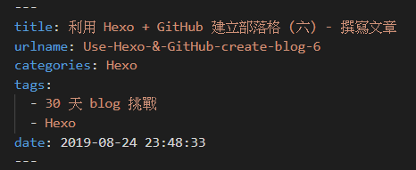
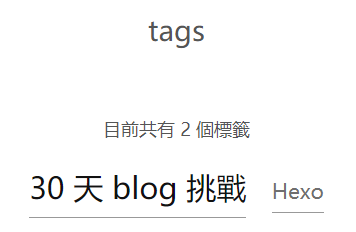
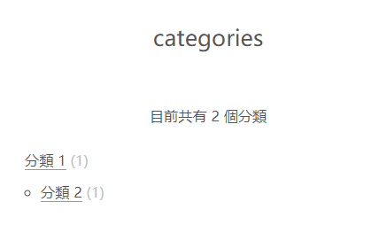
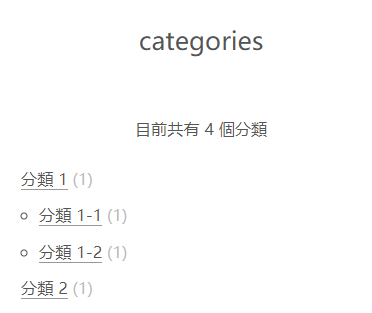
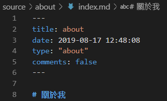
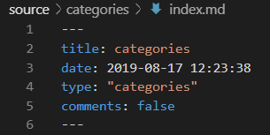
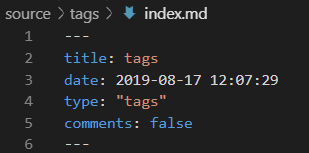

利用 Hexo + GitHub 建立部落格 (六) - 撰寫文章

當創建文章後，接下來就是文章內容的撰寫了~
開始之前
在使用創建文章指令後
1 | $ hexo new 文章類型 "檔名" |
不論是一般文章 post 、草稿 draft 及 頁面 page，都會產生一個副檔名為 .md 的檔案， .md 檔案可以使用 Markdown 語法 來撰寫，詳細可參考 Markdown 語法說明 頁面，之後再來寫一篇相關文章。
Front-matter

在開啟創建的 .md 檔案後，可以在最上方看到由 --- 包起來的內容 (如上圖)，這個內容稱為 Front-matter ，是設定文章變量的地方，除了預設的變量外也可以自訂變量
常用的預設參數
| 設定 | 描述 |
|---|---|
| layout | 佈局 |
| title | 標題 |
| date | 建立日期 |
| updated | 更新日期 |
| comments | 開啟文章的留言功能 ( 預設為 true 開啟) |
| tags | 標籤 |
| categories | 分類 |
| permalink | 覆蓋文章網址 |
| keywords | 關鍵詞 |
自訂義名稱
例如在 config.yml 設定的 urlname 變數，也可以在 Front-matter 使用
categories 及 tags
categories 及 tags 只有在 一般文章 及 草稿文章 中才支援，tags 沒有順序及階層，categories 則是有順序及階層的
tags 寫法
1
2
3
4
5
6
7// 寫法 1
tags:
- 30 天 blog 挑戰
- Hexo
// 寫法 2
tags: ["30 天 blog 挑戰", "Hexo"]
categories 寫法
1
2
3
4
5
6
7// 寫法 1
categories:
- 分類 1
- 分類 2
// 寫法 2
categories: ["分類 1", "分類 2"]呈現效果如下

若是文章要使用多個分類，則可用
[]1
2
3
4
5// 寫法 3
categories:
- ["分類 1", "分類 1-1"]
- ["分類 1", "分類 1-2"]
- ["分類 2"]呈現效果如下：

頁面的 Front-matter
特別須注意的是，頁面 page 需依照不同的類型，加入特定設定，才會使功能運作正常
例如：
關於我 頁面
type: "about"
分類 頁面
type: "categories"
標籤 頁面
type: "tags"

如果在這些頁面中，不想開啟評論，也要設定
comments: fasle
鷹架 ( Scaffold )
那如何更改 Front-matter 的預設內容，不想要每次都重新填寫呢 ？ 可以更改鷹架的設定
文章預設內容，是由 scaffolds 資料夾 內，對應同樣資料來建立檔案的
post
一般文章是在scafford/post.md中設定draft
草稿文章在scafford/draft.md中設定page
頁面則在scafford/page.md中設定
利用 Hexo + GitHub 建立部落格 系列文章
- 利用 Hexo + GitHub 建立部落格 (一) - 安裝 Hexo 及 Hexo 目錄結構
- 利用 Hexo + GitHub 建立部落格 (二) - Hexo _config.yml 配置指南 1
- 利用 Hexo + GitHub 建立部落格 (三) - Hexo _config.yml 配置指南 2
- 利用 Hexo + GitHub 建立部落格 (四) - 我的 Hexo _config.yml 設定
- 利用 Hexo + GitHub 建立部落格 (五) - 建立文章
- 利用 Hexo + GitHub 建立部落格 (六) - 撰寫文章
- 利用 Hexo + GitHub 建立部落格 (七) - 設置主題